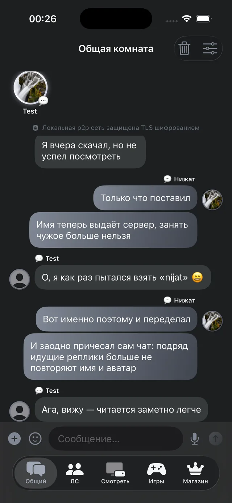
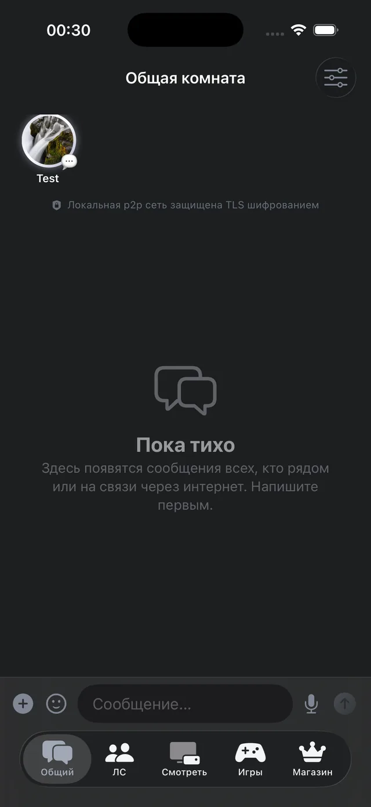
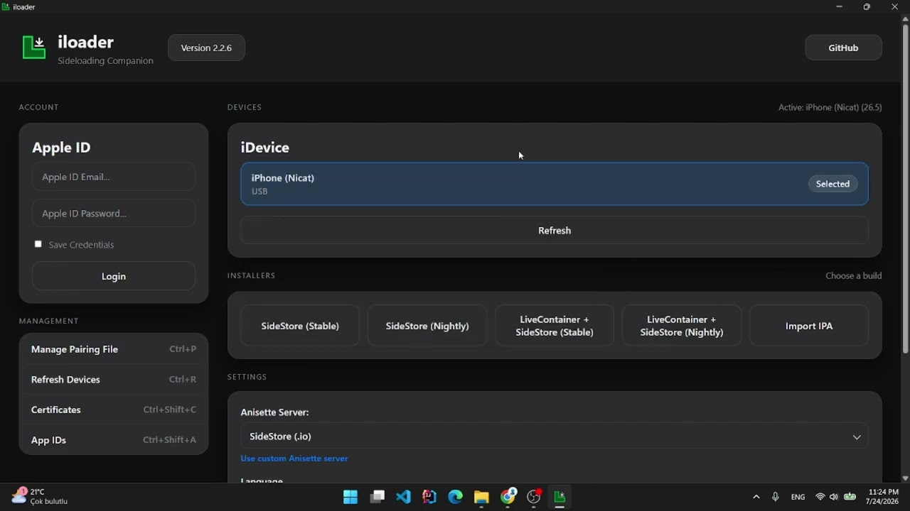

Работает без интернета
С теми, кто рядом, телефон связывается напрямую — по Wi-Fi и Bluetooth. В самолёте, в подвале, при отключённой сети переписка продолжается.
Сообщения идут напрямую с телефона на телефон и шифруются на них же. Рядом — по Wi-Fi и Bluetooth, вообще без интернета. Ни аккаунта, ни номера телефона.
1.9.21 версия 4.5 МБ iOS 16+
Приложение подписывается вашим Apple ID прямо на телефоне. У бесплатного Apple ID подпись действует 7 дней — потом её нужно продлить одним нажатием.
Два пути. Оба ставят одно и то же приложение и одинаково безопасны — подпись делается вашим Apple ID на вашем устройстве.
Это программа для компьютера, ставится по инструкции с сайта iLoader. Телефон понадобится подключить кабелем.
Нажмите «Скачать .ipa» на этой странице в браузере компьютера, а не телефона: файл нужен именно там, где стоит iLoader.
Войдите в Apple ID в самом iLoader и дождитесь, пока телефон появится в списке устройств. Затем Import IPA — и выберите скачанный файл.
Один раз, уже на телефоне: Настройки → Основные → VPN и управление устройством → выберите профиль → «Доверять».
По инструкции с altstore.io, прямо с телефона. Компьютер для этого способа не нужен.
Откройте эту страницу в Safari на iPhone и нажмите «Скачать .ipa». Файл попадёт в «Файлы» → «Загрузки».
Нажмите на файл → «Поделиться» → «Скопировать в AltStore». Либо в самом AltStore: My Apps → «+».
Настройки → Основные → VPN и управление устройством → профиль → «Доверять». Дальше AltStore умеет продлевать подпись сам.


С теми, кто рядом, телефон связывается напрямую — по Wi-Fi и Bluetooth. В самолёте, в подвале, при отключённой сети переписка продолжается.
Ключи не покидают телефон. Ретранслятор в интернете видит только, кому переслать пакет, но не то, что внутри.
Регистрация — это выбрать имя. Ни телефона, ни почты, ни пароля. Имя закрепляется за устройством, и занять чужое нельзя.

Зажмите кнопку «Скачать .ipa» и выберите «Скачать связанный файл» — Safari сохранит его в «Файлы».
Так и должно быть: сам по себе .ipa ничего не устанавливает. Его нужно подписать через iLoader или AltStore — тогда иконка и появится.
Это нормально и требуется обоими способами: так приложение подписывается лично для вас при установке и при каждом продлении.
Настройки → Основные → VPN и управление устройством → выберите профиль → «Доверять».
Ограничение бесплатного Apple ID: подпись живёт 7 дней. В AltStore нажмите Refresh, в iLoader переустановите тем же файлом. Данные останутся на месте.
Нет, выберите один. Это одно и то же приложение с одним идентификатором: установка вторым способом просто заменит первое.